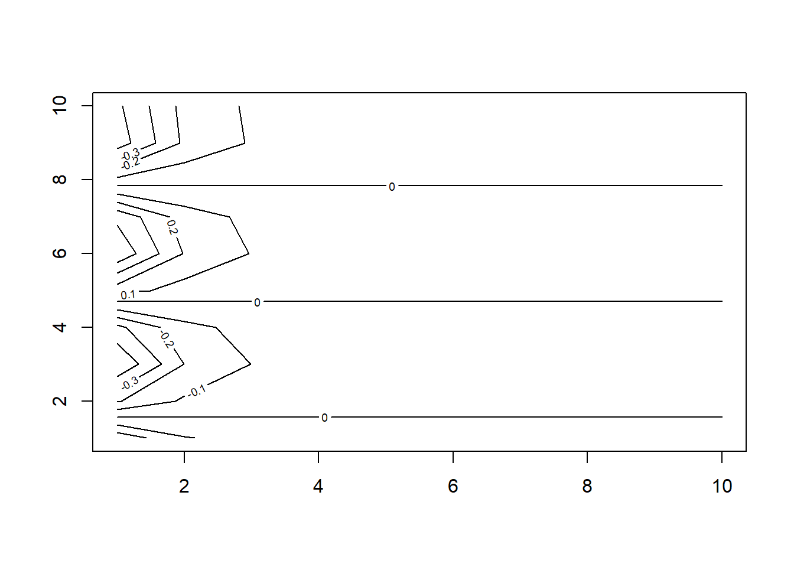
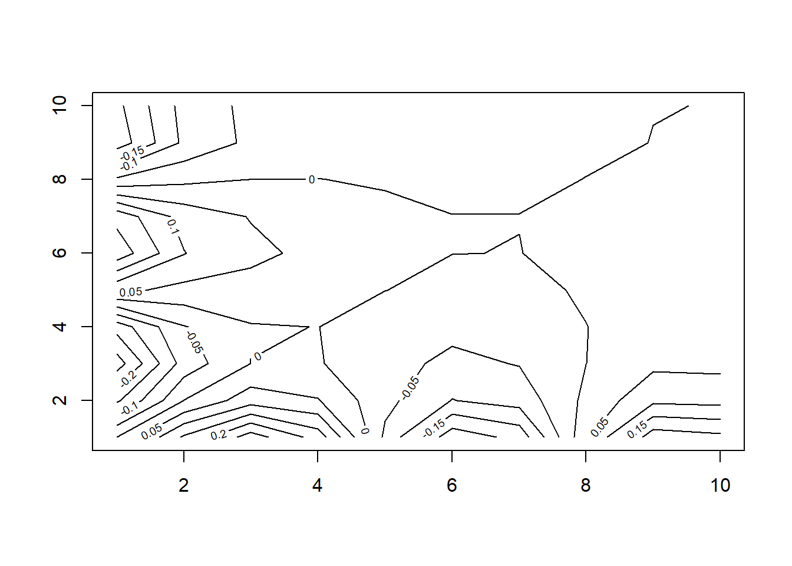
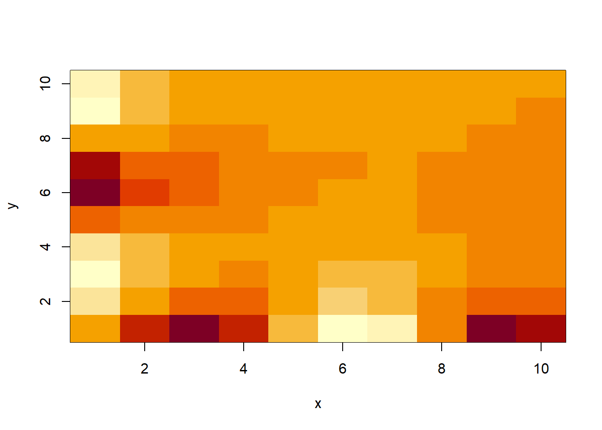
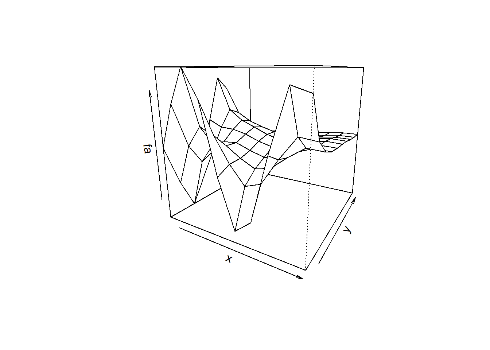
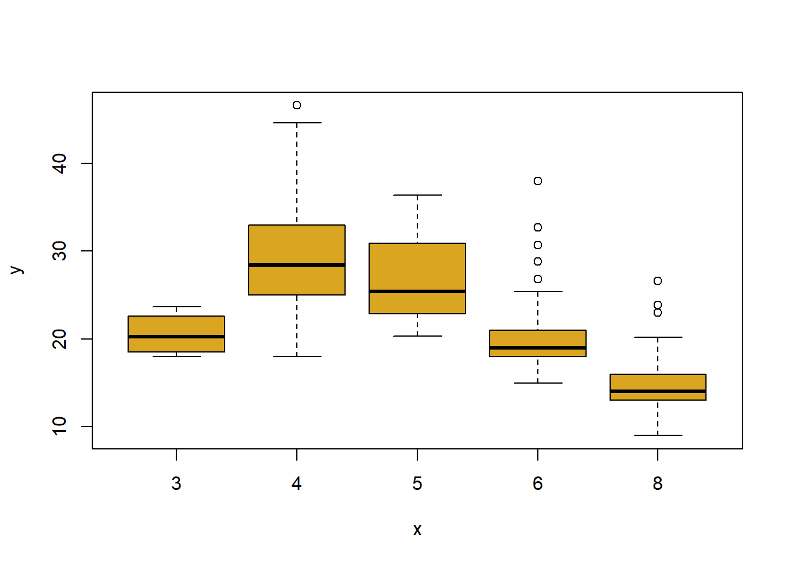

x <- c(1,3,2,5)
x[1] 1 3 2 5The purpose of this lab is to practice some R basics that we will begin using right away. If you are already proficient in R and need no practice, feel free to skip ahead to the Exercises to test yourself.
c()R uses functions to perform operations. To run a function called funcname, we type funcname(input1, input2), where the inputs (or arguments) input1 and input2 tell R how to run the function. A function can have any number of inputs. For example, to create a vector of numbers, we use the function c() (for concatenate). Any numbers inside the parentheses are joined together. The following command instructs R to join together the numbers 1, 3, 2, and 5, and to save them as a vector named x. When we type x, it gives us back the vector.
x <- c(1,3,2,5)
x[1] 1 3 2 5<- value assignmentWe can also “save things” (i.e. assign values) using = rather than <-, though the “arrow” syntax is the standard style in R:
x = c(1,6,2)
x[1] 1 6 2y = c(1,4,3) # why doesn't this "print out"?length()Hitting the up arrow multiple times will display the previous commands, which can then be edited. This is useful since one often wishes to repeat a similar command. In addition, typing ?funcname will always cause R to open a new help file window with additional information about the function funcname. We can tell R to add two sets of numbers together. It will then add the first number from x to the first number from y, and so on. However, x and y should be the same length. We can check their length using the length() function.
ls() , rm()The ls() function allows us to look at a list of all of the objects, such as data and functions, that we have saved so far. The rm() function can be used to delete any that we don’t want.
ls()[1] "x" "y"rm(x,y)
ls()character(0)It’s also possible to remove all objects at once without explicitly naming them (handy of you have more than few data objects in you Global Environment):
x = c(1,6,2)
y = c(1,4,3)
ls()[1] "x" "y"rm(list=ls()) # do you see what the 'list' argument does here?
ls()character(0)matrix()The matrix() function is used to create a matrix of numbers. Before we use the matrix() function, we can learn more about it to examine the arguments:
# ?matrixThe help file reveals that the matrix() function takes a number of inputs, but for now we focus on the first three: the data (the entries in the matrix), the number of rows, and the number of columns. First, we create a simple matrix.
x <- matrix( data=c(1 ,2 ,3 ,4) , nrow =2 , ncol =2)
x [,1] [,2]
[1,] 1 3
[2,] 2 4Note that we could just as well omit explicitly typing data=, nrow=, and ncol= in the matrix() command above: that is, we could just type:
x <- matrix ( c(1 ,2 ,3 ,4) ,2 ,2)and this would have the same effect. However, it can sometimes be useful to specify the names of the arguments passed in, since otherwise R will assume that the function arguments are passed into the function in the same order that is given in the function’s help file. As this example illustrates, by default R creates matrices by successively filling in columns. Alternatively, the byrow=TRUE option can be used to populate the matrix in order of the rows.
x <- matrix ( c(1 ,2 ,3 ,4) ,2 ,2, byrow=TRUE)sqrt() sqare rootNotice that in the above command we did not assign the matrix to a value such as x. In this case the matrix is printed to the screen but is not saved for future calculations. The sqrt() function returns the square root of each element of a vector or matrix. The command x^2 raises each element of x to the power 2; any powers are possible, including fractional or negative powers.
sqrt(x) [,1] [,2]
[1,] 1.000000 1.414214
[2,] 1.732051 2.000000x^2 [,1] [,2]
[1,] 1 4
[2,] 9 16rnorm(), cor() random Gaussian numbers, correlationThe rnorm() function generates a vector of random normal variables, with first argument n the sample size. Each time we call this function, we will get a different answer. Here we create two correlated sets of numbers, x and y, and use the cor() function to compute the correlation between them.
x <- rnorm(50)
y <- x+ rnorm(50 , mean =50 , sd =.1)
cor(x, y)[1] 0.995032set.seed makes ‘pseudo-random’ events repeatableBy default, rnorm() creates standard normal random variables with a mean of 0 and a standard deviation of 1. However, the mean and standard devi- ation can be altered using the mean and sd arguments, as illustrated above. Sometimes we want our code to reproduce the exact same set of random numbers; we can use the set.seed() function to do this. The set.seed() function takes an (arbitrary) integer argument.
rnorm(5); rnorm(5)[1] 0.2689178 0.1237465 -2.0645587 0.5066851 0.2826564[1] 0.8787616 0.9442790 -1.2917376 0.4827161 0.3612890set.seed(42); rnorm(5); set.seed(42); rnorm(5)[1] 1.3709584 -0.5646982 0.3631284 0.6328626 0.4042683[1] 1.3709584 -0.5646982 0.3631284 0.6328626 0.4042683We will endeavor to use set.seed() throughout the labs whenever we perform calculations involving random quantities. In general this should allow the user to reproduce the results. However, it should be noted that as new versions of R become available discrepancies may form between the labs and the output from R.
mean(), sd(), and var()The mean() and var() functions can be used to compute the mean and variance of a vector of numbers. Applying sqrt() to the output of var() will give the standard deviation. Or we can simply use the sd() function.
set.seed(3)
y <- rnorm(100, 10, 1)
mean(y)[1] 10.01104var(y)[1] 0.7328675sqrt(y) [1] 3.006338 3.115682 3.202934 2.974537 3.193084 3.167037 3.175755 3.334158
[9] 2.963299 3.356690 3.042239 2.978050 3.046907 3.201976 3.186228 3.113253
[17] 3.007820 3.058064 3.350271 3.193714 3.069449 3.009601 3.129900 2.886785
[25] 3.084728 3.042849 3.340751 3.318443 3.150860 2.977116 3.301609 3.294203
[33] 3.275319 3.276660 3.106102 3.271928 3.361601 3.168320 3.003451 3.285386
[41] 3.284282 3.112802 3.420363 3.034041 3.216899 2.781115 3.136526 3.336295
[49] 3.089410 3.016759 3.275185 3.031593 3.204229 2.874498 2.930627 3.089733
[57] 2.994079 3.370778 3.304157 3.035598 3.251695 3.304269 3.202544 3.217447
[65] 3.342804 3.085313 3.095347 3.309851 2.951439 3.191582 3.157321 3.235289
[73] 3.320271 3.204272 3.198723 3.278352 3.349189 3.222322 3.001991 3.137379
[81] 3.425717 3.106075 3.269349 3.350284 3.285467 3.161265 3.196741 3.018863
[89] 3.231062 3.018876 3.024265 3.001667 3.057633 3.324748 3.099858 3.151097
[97] 3.088357 3.246676 3.306302 3.129014sd(y)[1] 0.8560768plot()The plot() function is the primary way to plot data in R. For instance, plot(x,y) produces a scatterplot of the numbers in x versus the numbers in y. There are many additional options that can be passed in to the plot() function. For example, passing in the argument xlab will result in a label on the x-axis. To find out more information about the plot() function, don’t forget to use ?plot.
x <- rnorm(100)
y <- rnorm(100)
plot(x,y) # yuck
plot(x,y, xlab=" this is the x- axis",
ylab =" this is the y - axis",
main =" Plot of X vs Y ") # better
pdf(), png(), jpg()We will often want to save the output of an R plot. The command that we use to do this will depend on the file type that we would like to create. For instance, to create a pdf, we use the pdf() function, and to create a jpeg, we use the jpeg() function, png(), etc.
# This code will output a graph file to your working directory
png("MyFigure.png") # think of this as opening the file
plot(x, y, pch=16, col ="green") # writing something for that file
dev.off() # turning off the output to filepng
2 The function dev.off() indicates to R that we are done creating the plot. Alternatively, we can simply copy the plot window and paste it into an appropriate file type, such as a Word document.
seq()The function seq() can be used to create a sequence of numbers. For instance, seq(a,b) makes a vector of integers between a and b. There are many other options: for instance, seq(0,1,length=10) makes a sequence of 10 numbers that are equally spaced between 0 and 1. Typing 3:11 is a shorthand for seq(3,11) for integer arguments.
x <- seq(1,10)
x [1] 1 2 3 4 5 6 7 8 9 10x <- 1:10
x [1] 1 2 3 4 5 6 7 8 9 10x <- seq(-pi, pi, length = 50)
x [1] -3.14159265 -3.01336438 -2.88513611 -2.75690784 -2.62867957 -2.50045130
[7] -2.37222302 -2.24399475 -2.11576648 -1.98753821 -1.85930994 -1.73108167
[13] -1.60285339 -1.47462512 -1.34639685 -1.21816858 -1.08994031 -0.96171204
[19] -0.83348377 -0.70525549 -0.57702722 -0.44879895 -0.32057068 -0.19234241
[25] -0.06411414 0.06411414 0.19234241 0.32057068 0.44879895 0.57702722
[31] 0.70525549 0.83348377 0.96171204 1.08994031 1.21816858 1.34639685
[37] 1.47462512 1.60285339 1.73108167 1.85930994 1.98753821 2.11576648
[43] 2.24399475 2.37222302 2.50045130 2.62867957 2.75690784 2.88513611
[49] 3.01336438 3.14159265contour() plotWe will now create some more sophisticated plots. The contour() function produces a contour plot in order to represent three-dimensional data; it is like a topographical map. It takes three arguments:
A vector of the x values (the first dimension),
A vector of the y values (the second dimension), and
A matrix whose elements correspond to the z value (the third dimension) for each pair of (x,y) coordinates.
As with the plot() function, there are many other inputs that can be used to fine tune the output of the contour() function. To learn more about these, take a look at the help file by typing ?contour.
# don't worry too much about this code, but can you figure out what it does?
x <- y <- 1:10
f <- outer(x,y, function(x,y) cos(y)/(1+x^2))
contour(x,y,f)
fa <- ( f- t(f))/2
contour (x,y, fa , nlevels = 15)
image() and persp()The image() function works the same way as contour(), except that it produces a color-coded plot whose colors depend on the z value. This is known as a heatmap, and is sometimes used to plot temperature in weather forecasts. Alternatively, persp() can be used to produce a three-dimensional plot. The arguments theta and phi control the angles at which the plot is viewed.
image(x, y, fa)
persp(x, y, fa)
persp(x, y, fa, theta =30)
persp(x, y, fa, theta =30, phi = 20) # not enough
persp(x, y, fa, theta =30, phi = 70) # too much
persp(x, y, fa, theta =30, phi = 40) # juust right
We often wish to examine part of a set of data. Suppose that our data is stored in the matrix A.
A <- matrix(1:16, 4, 4)
A [,1] [,2] [,3] [,4]
[1,] 1 5 9 13
[2,] 2 6 10 14
[3,] 3 7 11 15
[4,] 4 8 12 16Then submitting:
A[2,3][1] 10will select the element corresponding to the second row and the third co umn. The first number after the open-bracket symbol [ always refers to the row, and the second number always refers to the column. We can also select multiple rows and columns at a time, by providing vectors as the indices.
A[c(1,3), c(2,4)] [,1] [,2]
[1,] 5 13
[2,] 7 15A[1:3, 2:4] [,1] [,2] [,3]
[1,] 5 9 13
[2,] 6 10 14
[3,] 7 11 15A[1:2,] [,1] [,2] [,3] [,4]
[1,] 1 5 9 13
[2,] 2 6 10 14A[,1:2] [,1] [,2]
[1,] 1 5
[2,] 2 6
[3,] 3 7
[4,] 4 8The last two examples include either no index for the columns or no index for the rows. These indicate that R should include all columns or all rows, respectively. R treats a single row or column of a matrix as a vector.
A[1,][1] 1 5 9 13The use of a negative sign - in the index tells R to keep all rows or columns except those indicated in the index.
A[-c(1,3),] [,1] [,2] [,3] [,4]
[1,] 2 6 10 14
[2,] 4 8 12 16A[-c(1 ,3) ,-c(1 ,3 ,4)][1] 6 8dim()The dim() function outputs the number of rows followed by the number of columns of a given matrix.
dim(A)[1] 4 4For most analyses, the first step involves importing a data set into R. The read.table() function is one of the primary ways to do this. The help file contains details about how to use this function. We can use the function write.table() to export data.
Before attempting to load a data set, we must make sure that R knows to search for the data in the proper directory. For example on a Windows system one could select the directory using the Change dir... option under the File menu. However, the details of how to do this depend on the operating system (e.g. Windows, Mac, Unix) that is being used.
Here you will begin by loading in the Auto data set, which is part of the R library {ISLR2}, but to illustrate the read.table() function we load it now from a text file. The following command will load the Auto.data file into R and store it as an object called Auto, in a format referred to as a data frame.
Auto dataDownload the Auto.csv data file
Once the data has been loaded, the fix() function can be used to view it in a spreadsheet like window. However, the window must be closed before further R commands can be entered.
# Your code may look similar
# Auto <- read.csv("Auto.csv")
# fix(Auto)Peek at the data (note the view may wrap around the lines)
mpg cylinders displacement horsepower weight acceleration year origin
1 18 8 307 130 3504 12.0 70 1
2 15 8 350 165 3693 11.5 70 1
3 18 8 318 150 3436 11.0 70 1
4 16 8 304 150 3433 12.0 70 1
5 17 8 302 140 3449 10.5 70 1
6 15 8 429 198 4341 10.0 70 1
name
1 chevrolet chevelle malibu
2 buick skylark 320
3 plymouth satellite
4 amc rebel sst
5 ford torino
6 ford galaxie 500Note that data like these are usually simply a text file, which you could alternatively open on your computer using a standard text editor. It is often a good idea to view a data set using a text editor or other software such as Excel before loading it into R…
This particular data set has probably not loaded correctly for you on the first try, because
R has assumed that the variable names are part of the data and so has included them in the first row.
The data set also includes a number of missing observations, indicated by a question mark ?.
There is a problematic character (at least one…) in the name variable on row 12.
Missing values are a common occurrence in real data sets. Using the argument header=T (or header=TRUE) in the read.table() function tells R that the first line of the file contains the variable names, and using the option na.strings tells R that any time it sees a particular character or set of characters (such as a question mark), it should be treated as a missing element of the data matrix.
# try this
# Auto <- read.csv("data/Auto.csv", sep = ',', header = T , na.strings = "?")
# fix(Auto)Once the data are loaded correctly
# try this
# dim(Auto)
# Auto[1:4, ]
# names(Auto)We can use the plot() function to produce scatterplots of the quantitative variables. However, simply typing the variable names will produce an error message, because R does not know to look inside the Auto data object for those variables.
# try this
# plot(cylinders, mpg) #error
# Error in plot(cylinders, mpg) : object 'cylinders' not foundplot( Auto$cylinders, Auto$mpg )
attach()To refer to a variable explicitly, we can type the data set and the variable name joined with a $ (cash) symbol. Alternatively, we can use the attach() function in order to tell R to make the variables in this data frame available by name.
attach(Auto)
plot(cylinders, mpg)
The cylinders variable is stored as a numeric vector, so R has treated it as quantitative. However, since there are only a small number of possible values for cylinders, one may prefer to treat it as a qualitative variable. The as.factor() function converts quantitative variables into qualitative variables.
cylinders <- as.factor(cylinders)If a variable plotted on the x-axis is categorial, then boxplots will automatically be produced by the plot() function. As usual, a number of options can be specified in order to customize the plots.
plot(cylinders, mpg)
plot(cylinders, mpg, col ="goldenrod") # Ed's favourite R colour
plot(cylinders, mpg, col ="goldenrod", varwidth = T)
plot(cylinders, mpg, col ="goldenrod", varwidth = T , horizontal = T)
plot(cylinders, mpg, col ="goldenrod", varwidth = T ,
xlab="cylinders", ylab ="MPG")
hist()The hist() function can be used to plot a histogram. Note that indexing the base color pallette numerically is possible, such that col=2 has the same effect as col="red".
hist(mpg)
hist(mpg, col = 2)
hist(mpg, col = 2, breaks = 15)
pairs()The pairs() function creates a scatterplot matrix i.e. a scatterplot for every pair of variables for any given data set. We can also produce scatterplots for just a subset of the variables.
pairs(~ mpg + displacement + horsepower + weight + acceleration, Auto )
identify()In conjunction with the plot() function, identify() provides a useful interactive method for identifying the value for a particular variable for points on a plot. We pass in three arguments to identify(): the x-axis variable, the y-axis variable, and the variable whose values we would like to see printed for each point. Then clicking on a given point in the plot will cause R to print the value of the variable of interest. Right-clicking on the plot will exit the identify() function (control-click on a Mac). The numbers printed under the identify() function correspond to the rows for the selected points.
plot(horsepower, mpg)
# this only works on your local machine - try it
# identify(horsepower, mpg, name)summary()The summary() function produces a numerical summary of each variable in a particular data set.
summary(Auto) mpg cylinders displacement horsepower weight
Min. : 9.00 Min. :3.000 Min. : 68.0 Min. : 46.0 Min. :1613
1st Qu.:17.00 1st Qu.:4.000 1st Qu.:105.0 1st Qu.: 75.0 1st Qu.:2225
Median :22.75 Median :4.000 Median :151.0 Median : 93.5 Median :2804
Mean :23.45 Mean :5.472 Mean :194.4 Mean :104.5 Mean :2978
3rd Qu.:29.00 3rd Qu.:8.000 3rd Qu.:275.8 3rd Qu.:126.0 3rd Qu.:3615
Max. :46.60 Max. :8.000 Max. :455.0 Max. :230.0 Max. :5140
acceleration year origin name
Min. : 8.00 Min. :70.00 Min. :1.000 amc matador : 5
1st Qu.:13.78 1st Qu.:73.00 1st Qu.:1.000 ford pinto : 5
Median :15.50 Median :76.00 Median :1.000 toyota corolla : 5
Mean :15.54 Mean :75.98 Mean :1.577 amc gremlin : 4
3rd Qu.:17.02 3rd Qu.:79.00 3rd Qu.:2.000 amc hornet : 4
Max. :24.80 Max. :82.00 Max. :3.000 chevrolet chevette: 4
(Other) :365 For qualitative variables such as name, R will list the number of observations that fall in each category. We can also produce a summary of just a single variable.
summary(mpg) Min. 1st Qu. Median Mean 3rd Qu. Max.
9.00 17.00 22.75 23.45 29.00 46.60 Once we have finished using R, we type q() in order to shut it down, or quit. When exiting R, we have the option to save the current workspace so that all objects (such as data sets) that we have created in this R session will be available next time. Before exiting R, we may want to save a record of all of the commands that we typed in the most recent session; this can be accomplished using the savehistory() function. Next time we enter R, we can load that history using the loadhistory() function (useful in some circumstances).
This exercise relates to the College data set csv file. It contains a number of variables for 777 different universities in the US. The variables are
Before reading the data into R, it can be viewed in Excel or a text editor.
Use the read.csv() function to read the data into R. Call the loaded data college. Make sure that you have the directory set to the correct location for the data.
Look at the data using the View() function. You should notice that the first column is just the name of each university. We don’t really want R to treat this as data. However, it may be handy to have these names for later. Try the following commands:
# try this
# rownames(college) <- college[, 1]
# View(college) You should see that there is now a row.names column with the name of each university recorded. This means that R has given each row a name corresponding to the appropriate university. R will not try to perform calculations on the row names. However, we still need to eliminate the first column in the data where the names are stored. Try
# try this
# college <- college[, 1]
# View(college) Now you should see that the first data column is Private. Note that another column labeled row.names now appears before the Private column. However, this is not a data column but rather the name that R is giving to each row.
Use the summary() function to produce a numerical summary of the variables in the data set.
Use the pairs() function to produce a scatterplot matrix of the first ten columns or variables of the data. Recall that you can reference the first ten columns of a matrix A using A[,1:10].
Use the plot() function to produce side-by-side boxplots of Outstate versus Private. Briefly interpret the information the graph conveys.
Create a new qualitative variable, called Elite, by binning the Top10perc variable. We are going to divide universities into two groups based on whether or not the proportion of students coming from the top 10% of their high school classes exceeds 50%.
Use the summary() function to see how many elite universities there are. Now use the plot() function to produce side-by-side boxplots of Outstate versus Elite. Briefly interpret the information the graph conveys.
Use the hist() function to produce some histograms with differing numbers of bins for a few of the quantitative variables. You may find the command par(mfrow = c(2, 2)) useful: it will divide the print window into four regions so that four plots can be made simultaneously. Modifying the arguments to this function will divide the screen in other ways.

This module is a part of the MSc in Data Science for Global Agriculture, Food, and Environment at Harper Adams University, led by Ed Harris.